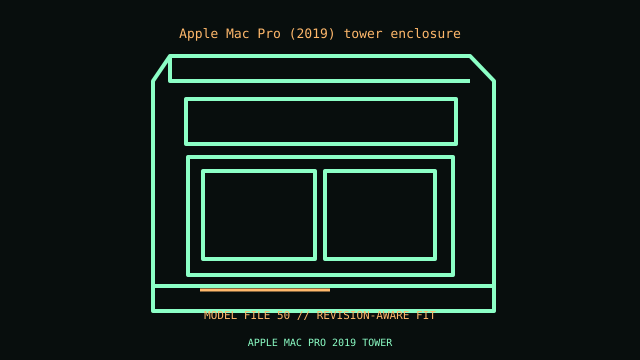

[ IDENTIFIED ENCLOSURE // PROFESSIONAL WORKSTATION ENCLOSURES ]
Apple Mac Pro (2019) tower enclosure
529 × 218 × 450 mm H×W×D; feet and handles excluded. Proprietary Mac Pro logic board, T2/MPX power and airflow; eight PCIe slots with Apple-specific MPX power/thermal details.

VARIANT / ARCHIVAL CAVEAT: 2019 tower differs externally from rack model. MPX modules, PCIe power and SATA harness are model-specific; top cover interlock must be preserved.
Mechanical specifications and fit
| Catalog identity / revision | Apple Mac Pro (2019) tower enclosure |
|---|---|
| Dimensions / construction | 529 × 218 × 450 mm H×W×D; feet and handles excluded. |
| Drive bays / storage | Two internal SATA 3.5-inch bays; additional storage via PCIe/MPX solutions. |
| Board, system and compatibility | Proprietary Mac Pro logic board, T2/MPX power and airflow; eight PCIe slots with Apple-specific MPX power/thermal details. |
| Revision / service note | 2019 tower differs externally from rack model. MPX modules, PCIe power and SATA harness are model-specific; top cover interlock must be preserved. |
Preservation and installation notes
Identify the product number/service tag and retain the matched power supply, GPU support, board, fan ducts and storage cage; workstation submodels may share an outer shell but not internals.
- Photograph the complete model label, assembly revision and option identifiers before opening; keep matching covers, brackets, shields, trays and fasteners together.
- Check the manufacturer’s configuration for the selected processor and GPU power/cooling requirements before substituting cards or power modules.
Manufacturer manuals and model-specific sources
- Apple Mac Pro (2019) tower enclosure manufacturer specifications / product referenceModel-specific manufacturer specification, owner/service manual or technical reference; verify exact model and revision.
- Apple Mac Pro (2019) tower enclosure manual and service documentationModel-specific manufacturer specification, owner/service manual or technical reference; verify exact model and revision.
Where normalized dimensions or option-specific limits are not published, the record states that limitation rather than asserting a generic fit. Verify the cited manual revision against the specimen.